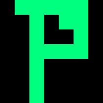
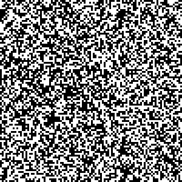

PixelChart
Map binary data into a beautiful chart
PixelChart let's you create an image, a pixel chart / plot, based on binary data.
The idea is that truthy and falsy values will be represented by a different color
to be able to quickly visualize boolean values.
For example:

Requirements
You have to install the system requirements for both backends.
Example for Linux distros:
- ArchLinux:
pacman -S libvips imagemagick - openSUSE:
zypper in libvips42 ImageMagick - Ubuntu:
apt install libvips42 imagemagick
Installation
gem install pixelchart
See the the documentation for more advanced options.
Usage
CLI
$ pixelchart draw test.csv test.png -w 100 -h 100 -s 3
[+] Image saved
See the CLI documentation.
library
See the PixelChart.
scenarios
See some scenarios with examples.